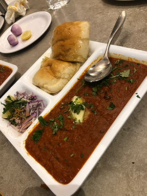
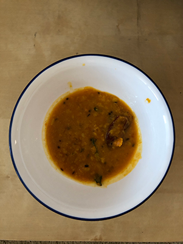
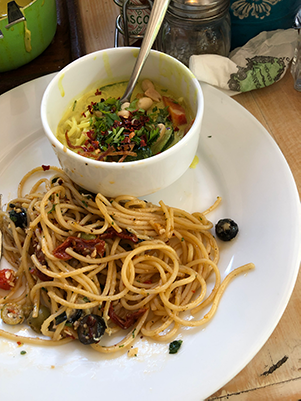

Recipes
Pav Bhaji

Ingredients
-
Potatoes (3)
-
Tomatoes (5)
- Cauliflower 1 cup florets
-
red Onions (2)
- 2 green bell peppers
- 1 cup green peas
-
garlic 7-8 cloves
- Spices 1 spoon each
- A packet of bun
How to make
-
Pressure cook patoetoes and green peas in an instant pot with a pinch of salt.
-
In a pan, heat 4 tsp of oil, add 3 tsp of chopped garlic and and finely chopped onions. Stir fry for couple of mins till raw smell goes.
-
Add finely chopped green bell peppers stir fry for couple of minutes, simultaneously add spices like cumin powder and red paprika powder and a pinch of salt.
-
Once cooked well add 2.5 cups of tomatoe puree.
- Once the potaetoes and green peas are boiled, peal the skin of the patatoes and grate them
-
Add grated potatoes and green peas in the pan.
-
Mix all the ingredients well. Add pavbhaji masala, simmer it for few mins.
-
Garnish it with cilantro, lemon and some butter. Enjot it with toasted bun or pav.
Lentil soup or dal

Ingredients
-
Split pigeon peas 1 cup.
-
1 tomato
-
Curry leaves
-
2 green chillies
- Grated ginger
-
1 tsp of: cumin seeds, mustard seeds, red paprika powder and 1 tsp turmeric
How to make
- Take 1 cup of split pigeon peas wash it throughly and pressure cook till the dal is completely mushy and cooked completely
-
In a pot pan, add 1/2 tsp of oil.
-
Once the oil is heated, add cumin seeds, mustard seeds, slited chillies, add ginger and few curry leaves.
-
Add turmeric powder, red chilly paprika powder and add the cooked daal.
-
Add 1 cup water and salt.
-
Simmer the gaal for 5 mins.
-
Garnish it with cilantro
Aglio Olio pasta

Ingredients
-
Spaghetti pasta
-
Small cup of minced garlic
-
Parsley
-
Mixed dry herbs and chilly flakes
-
Black olives sliced
- Parmesan cheese
How to make
-
Boil the spaghetti in the pan with a pinch of salt. Do not over cook.
-
Strain the water from the boiled pata.
-
In a pan, heat 1 tsp of olive oil, add minsed garlic and pinch of salt.
-
Add seasonings and chopped parsley.
-
Add the cooked spaghetti, and add grated parsmesan cheese.
- Garnish the dish with some parsley and olives